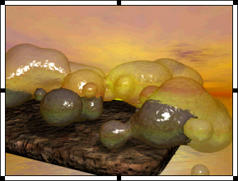

Using Director > Sound, Video, and Synchronization > Cropping digital video
Using Director > Sound, Video, and Synchronization > Cropping digital video |
Cropping digital video
Cropping a digital video means trimming the edges off the top or sides of the movie image. Cropping doesn't permanently remove the portions you crop; it just hides them.
To crop a digital video:
1 |
Select the cast member in the Cast window. |
2 |
Click the QuickTime or AVI tab in the Property Inspector. |
3 |
Select Crop. |
Director retains the movie's original size if you resize the bounding rectangle; however, the edges of the movie will be clipped if you make the bounding rectangle too small. |
|
4 |
Select Center, if you wish. |
Director centers the movie when you resize the bounding rectangle. If Center is not selected, the movie maintains its original position when you resize its bounding rectangle. Center is available only if Crop is selected. |
|
5 |
Click OK. |
6 |
Select the video in the Score. |
7 |
Go to the Stage and drag any of the handles that appear on the selection rectangle that surrounds the video image.
 |
Director displays only as much of the movie image as will fit in the area defined by the selection rectangle. |
|
If you would rather scale the movie than resize it, select Scale instead of Crop in the QuickTime tab of the Property Inspector. Director scales the movie if you resize the bounding rectangle.
To use Lingo to move the image of a QuickTime video around within the sprite's bounding rectangle:
Set the digital video's translation QuickTime sprite or cast member property. See translation.